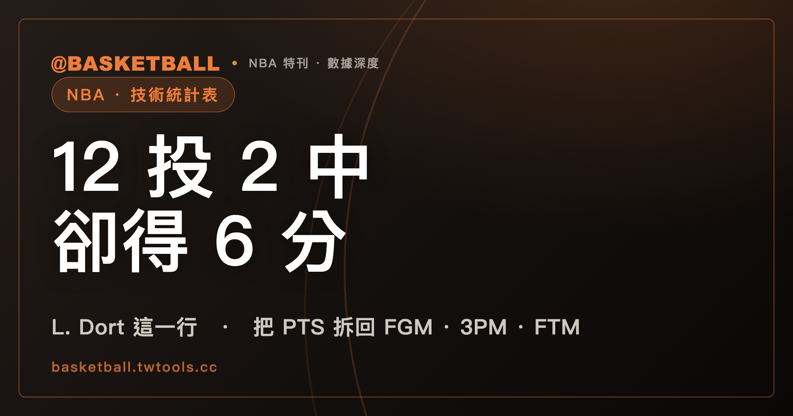

投籃 12 次只得 6 分：技術統計表的欄位，要成對讀、拆開讀
技術統計表（box score）的每一欄記錄不同的事件，欄位定義決定它能回答什麼問題。以 NBA 2025-26 賽季一場打到第二個延長賽的比賽為例，L. Dort 投籃出手 12 次只得 6 分，把欄位成對讀就能算出來。

新手村｜數據入門・技術統計表
第一次看 NBA 的技術統計表（box score），一行密密麻麻的字母與數字，很容易讓人只盯著 PTS 那一欄。但每一欄記錄的是不同的事件：PTS 是得分總數，FGM 與 FGA、3PM 與 3PA、FTM 與 FTA 兩兩成對，+/- 則是球員在場時的球隊分差。讀一個數字之前，可以先確認那一欄的定義。
這篇文章拿一張真實的 NBA 表當例子，再用假設數字讓你自己算一次。讀完之後，你應該能把一名球員的 PTS 拆回投籃與罰球、看出 +/- 不是個人得分，也知道 FIBA 手冊裡的助攻細則不能直接當成 NBA 的規定。
投籃出手 12 次只得 6 分，要怎麼算出來？
2025 年 10 月 21 日，NBA 2025-26 例行賽 OKC 對 HOU 一路打到第二個延長賽（2OT）。nba.com 這場比賽的 box score 頁面上，OKC 的 L. Dort 這一行是這樣：
| 欄位 | 此場數字 | 意思 |
|---|---|---|
| FGM／FGA | 2／12 | 投進 2 球、出手 12 次，兩分球與三分球合計 |
| 3PM／3PA | 0／8 | 三分球投進 0 球、出手 8 次 |
| FTM／FTA | 2／2 | 罰球投進 2 球、出手 2 次 |
| PTS | 6 | 得分 |
出手 12 次，只得 6 分，看起來不太對勁。拆開來算就清楚了。
NBA 2025-26 規則書（Rule No. 5 Section I，計分）規定：界內的兩分球算 2 分，三分線外的投籃算 3 分，罰球算 1 分。這場 Dort 的 3PM 是 0，所以 2 個進球都是兩分球，得 4 分。2 次罰球全進，再加 2 分。4 加 2 等於 6，和 PTS 欄一致。
把它寫成算式，就是 PTS ＝ 2 × FGM ＋ 3PM ＋ FTM。為什麼 3PM 只加一次？因為 NBA 詞彙表（NBA Stats Glossary）的 FGM 定義包含兩分球與三分球，每一顆三分球已經在 2 × FGM 裡算了 2 分，還差 1 分，所以再補一次 3PM。這條算式是由規則書的計分值與詞彙表的欄位定義推出來的，不是官方公式的原文；此場 Dort 的數字驗算得起來。
12 次出手裡有 8 次是三分球，罰球則在另一組欄位
NBA 詞彙表把 FGM 定義成「投進的 field goal 數，包含兩分球與三分球」，FGA 則是出手數，同樣包含兩分球與三分球。3PM 與 3PA 只記三分球，FTM 與 FTA 記罰球。這三組欄位各自成對，每一組都有「進幾球」與「投幾球」兩個數字。
成對讀的原因很單純：只看進球數，看不出出手幾次。Dort 這場的 FGM 是 2，這個數字單獨存在時，可能是 2 投 2 中，也可能是 2 投 12 中。放進 2／12 之後，才是一個完整的問題答案：這個晚上他出手了幾次、進了幾次。
同一行還能再往下拆。FGA 是 12、3PA 是 8，依照詞彙表 FGA 包含三分球的定義，12 次出手裡有 8 次是三分球，其餘 4 次是兩分球（這是算術，不是表上另有一欄）。3PM 是 0，代表 8 次三分球都沒有進；FGM 是 2，代表那 4 次兩分球進了 2 球。
罰球的位置不一樣。NBA 詞彙表對 FGM 與 FGA 的定義只列兩分球與三分球，罰球在 FTM 與 FTA 兩欄另列。所以 Dort 的 2／2 罰球不會出現在 2／12 裡，卻會出現在 PTS 的 6 分裡。這也是 PTS 不能只用投籃兩欄還原的原因：罰球那 2 分在另一組欄位。
球隊欄位用同一條算式：46、13、20 換來 125 分
同一場比賽的 nba.com box score 頁面，也列出 OKC 全隊的欄位：FGM 46、3PM 13、FTM 20，全隊得分 125。
用同一條算式驗算：2 × 46 等於 92，加上 13，再加上 20，等於 125。個人欄位和球隊欄位用的是同一套算法，這場 OKC 的數字對得上。這也是此場實例的驗算結果，不是球隊得分的官方公式。
這個對照有一個實用的地方：當你在表上看到一個得分數字，可以自己動手拆回 FGM、3PM 與 FTM。拆得回去，代表欄位讀對了。拆不回去，就回頭檢查是不是有一欄讀錯，或把兩個不同欄位當成同一個。
球隊的 MIN 欄是 290:00，因為打了兩個延長賽
MIN 欄記錄上場分鐘。NBA 詞彙表的定義是「球員或球隊的上場分鐘數」，沒有寫顯示格式；不過 nba.com 這場 box score 頁面上，Dort 的 MIN 顯示為 45:15，也就是 45 分 15 秒。
球隊那一欄顯示的是 290:00。NBA 2025-26 規則書（Rule No. 5 Section II）規定，一節 12 分鐘，延長賽每一個 5 分鐘。這場打了 4 節加 2 個延長賽，全場 58 分鐘。場上同時有 5 名球員，58 乘 5 等於 290，也就是五位球員的上場時間加總（這是對 290:00 的算術解讀，不是頁面上另有說明）。
這個算式帶出一個讀表的小提醒：球隊那一欄的 MIN 不是某位球員的時間，也不是比賽時間本身。
MIN 的顯示格式也因來源而異。FIBA Statisticians' Manual 2024 版在只顯示分鐘、不顯示秒數時，規定 30 秒以上進位、未滿 30 秒捨去。這是 FIBA 2024 手冊的規則，NBA 詞彙表沒有寫類似的條文，不能拿來套在 nba.com 的表上。
+/- 記的是球員在場時球隊的分差，不是球員自己的得分
+/- 這一欄的名字像是加減個人的分數，讀法卻不是。NBA 詞彙表的定義是：球員或球隊在場上時的分差（point differential）。FIBA Statisticians' Manual 2024 版的說法一致：這個欄位表示該球員在場上期間，球隊的淨得分。
兩份文件講的是同一件事：數字反映的是「他在場的那段時間，球隊比對手多得或少得幾分」，而不是他個人投進了什麼。
用一組假設數字說明。假設球員 A 上場 20 分鐘，這 20 分鐘裡球隊得 45 分、對手得 40 分，A 自己 0 分。他的 +/- 是 ＋5，而他的 PTS 是 0。再假設球員 B 個人得 20 分，但他在場的時間裡球隊得 30 分、對手得 36 分，B 的 +/- 就是 －6。
這兩個數字沒有互相取代的關係。PTS 回答「他自己得了幾分」，+/- 回答「他在場時，球隊和對手的分差是多少」。要注意的是，+/- 混進了場上其他四位隊友與五位對手的表現，單看它，分不出那個分差有多少是他造成的，這是欄位定義本身的限制。
AST、REB、STL、BLK、TOV 各記一種事件，詞彙表只給一句定義
除了得分與投籃，其他欄位各記一種事件。NBA 詞彙表對每一欄都只有一句話的定義：
| 欄位 | NBA 詞彙表怎麼定義（意譯） |
|---|---|
| AST | 直接導致進球的傳球 |
| REB | 球員在失手投籃之後重新取得球的次數，進攻與防守兩邊的總和 |
| OREB／DREB | 球員或球隊在進攻方、防守方時取得的籃板數 |
| STL | 防守球員從進攻球員手上奪球，並造成失誤的次數 |
| BLK | 進攻球員出手，防守球員把球撥掉，擋下得分機會 |
| TOV | 進攻方的球員或球隊把球輸給防守方 |
| PF | 球員或球隊犯的個人犯規數 |
有一個關係可以自己驗證。REB 是 OREB 與 DREB 的總和：這場 Dort 的 OREB 是 2、DREB 是 4，REB 是 6，2 加 4 等於 6，nba.com 這場 box score 頁面上三個數字對得上。
各欄記的是不同事件，數字之間不需要互相對應。STL 記的是防守方的動作，TOV 記的是進攻方的失誤。NBA 詞彙表把抄截寫成「奪球並造成失誤」，卻沒有寫每一次失誤都來自抄截，所以一隊的 TOV 不等於對手的 STL。
PF 記的是犯規次數。犯規與違例在比賽中怎麼區分，可以看本站的違例與犯規有什麼不同。
助攻的運球細則出自 FIBA 2024 手冊，NBA 詞彙表沒有寫
同樣叫助攻，NBA 詞彙表只有一句：直接導致進球的傳球。FIBA Statisticians' Manual 2024 版的主句相同，但另外補了細則：傳球給禁區外的球員、他運球後得分，要看投籃者需不需要過掉防守者才算助攻；只有緊接在出手前的那一傳可以記助攻；接球者在投籃動作中被犯規、至少罰進一球時，也比照投進的 field goal 記助攻。這些都是 FIBA 2024 手冊的條文。
NBA 詞彙表沒有寫這些條文，看 NBA 比賽的表時，不能把它們當成 NBA 的記錄規定；NBA 端這幾件事怎麼記，詞彙表沒有說，想知道要另找 NBA 的官方統計手冊。
拿一行假設的數字試試：8／15、3／7、2／4 是幾分？
到這裡，所有欄位都出現過了。下面用一組假設數字，自己算一次。
假設某位球員的 box score 這一行是：FGM／FGA 為 8／15，3PM／3PA 為 3／7，FTM／FTA 為 2／4。他的 PTS 應該是多少？
依照 NBA 2025-26 規則書的計分值與前面的算式：2 × 8 等於 16，加上 3PM 的 3，再加上 FTM 的 2，PTS ＝ 21。也可以換個角度算：8 個進球裡有 3 個是三分球，另外 5 個是兩分球。3 顆三分球是 9 分，5 顆兩分球是 10 分，2 顆罰球是 2 分，9 加 10 加 2 也是 21。
再往下驗證。假設表上的 PTS 寫著 19，用算式拆回去，2 × 8 加 3 等於 19，剛好就是漏加了 2 個罰球。這種對不上的落差，有時就是讀表時漏看了一個欄位。
再看一個數字：FGA 是 15、FTA 是 4。FGA 只算兩分球與三分球出手，FTA 是罰球出手，兩者是不同的欄位，不要加在一起。出手數與罰球數要放在同一段話裡比較時，可以看本站的真實命中率入門，它處理的是把投籃與罰球合成一個效率數字的算法。
以下是編輯的讀法，不是官方規定：拿到一張表，可以先把 PTS 拆回 FGM、3PM、FTM，確認自己讀對了欄位；再把每個「進」與「投」的數字成對看；有 +/- 的時候，記得那是球隊的分差。下次看 NBA 比賽，挑一場的 box score，自己拆一次 PTS。想找比賽，可以先從本站的戰績頁開始。
常見問題
PTS 可以用 FGM、3PM、FTM 算出來嗎？
可以，依 NBA 2025-26 規則書的計分值（界內兩分球 2 分、三分線外 3 分、罰球 1 分），加上 NBA 詞彙表的欄位定義，PTS ＝ 2 × FGM ＋ 3PM ＋ FTM。這條算式是由計分值與欄位定義推導的，不是官方公式的原文；此場（2025 年 10 月 21 日 OKC 對 HOU）的 L. Dort 為 2 × 2 ＋ 0 ＋ 2 ＝ 6，OKC 全隊為 2 × 46 ＋ 13 ＋ 20 ＝ 125，兩者都對得上。
罰球算在 FGM 與 FGA 裡嗎？
不算。NBA 詞彙表對 FGM 與 FGA 的定義只列兩分球與三分球；罰球另有 FTM 與 FTA 兩欄。這是依 NBA 詞彙表的欄位定義，加上 2025 年 10 月 21 日 OKC 對 HOU 那場 box score 的算術驗算得到的結論，詞彙表本身沒有寫出「不含罰球」這句話。
+/- 是球員自己的得分嗎？
不是。NBA 詞彙表的定義是球員或球隊在場上時的分差；FIBA Statisticians' Manual 2024 版寫的是該球員在場上期間，球隊的淨得分。兩者都是球隊層級的數字，不是個人得分，也無法單靠這一欄分出分差有多少是他個人造成的。
NBA 的助攻可以運球幾次？
NBA 詞彙表（2026 年 9 月 25 日取得）對助攻只寫「直接導致進球的傳球」，沒有寫運球次數。運球的限制出自 FIBA Statisticians' Manual 2024 版：禁區外接球運球後得分，投籃者不需要過掉防守者才算助攻，手冊之後還有補充的例外。這是 FIBA 2024 手冊的條文，不能當成 NBA 的規定。
資料來源
- NBA Stats Glossary（nba.com，2026 年 9 月 25 日取得，頁面無版本標記）：nba.com/glossary
- NBA Official Playing Rules 2025-26 賽季規則書：Rule No. 5 Section I（計分）、Section II（比賽時間）。ak-static.cms.nba.com/Official-2025-26-NBA-P…
- nba.com 比賽 box score，2025 年 10 月 21 日 OKC 對 HOU（比賽編號 0022500001）：nba.com/box-score
- FIBA Statisticians' Manual 2024（Version 1.0，2026 年 9 月 25 日取得）：assets.fiba.basketball/documents-corporate-fi…